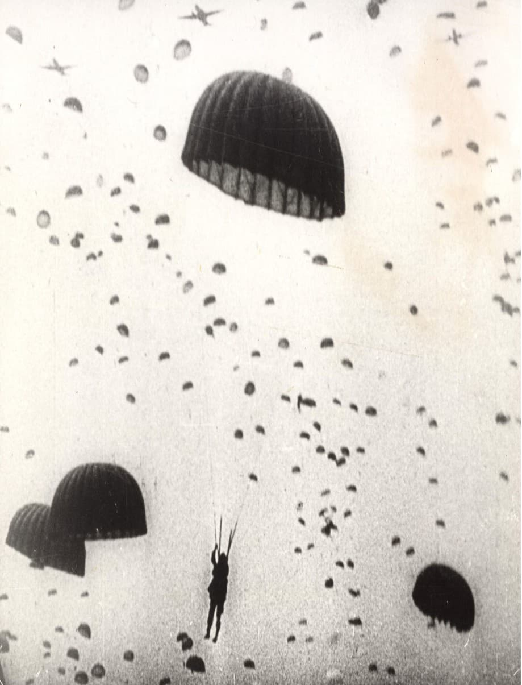
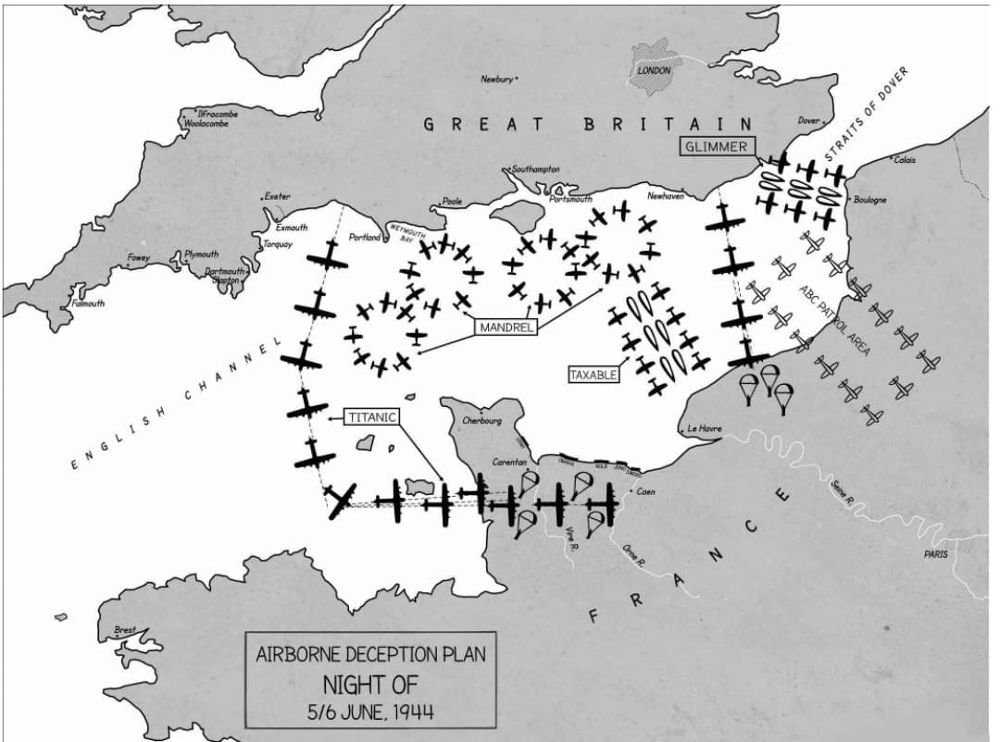
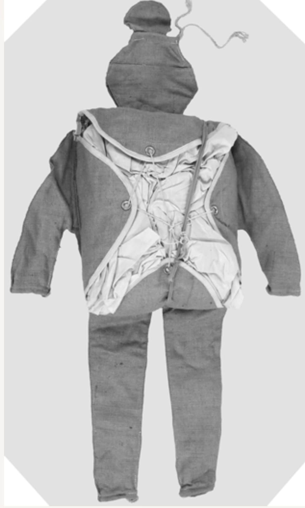
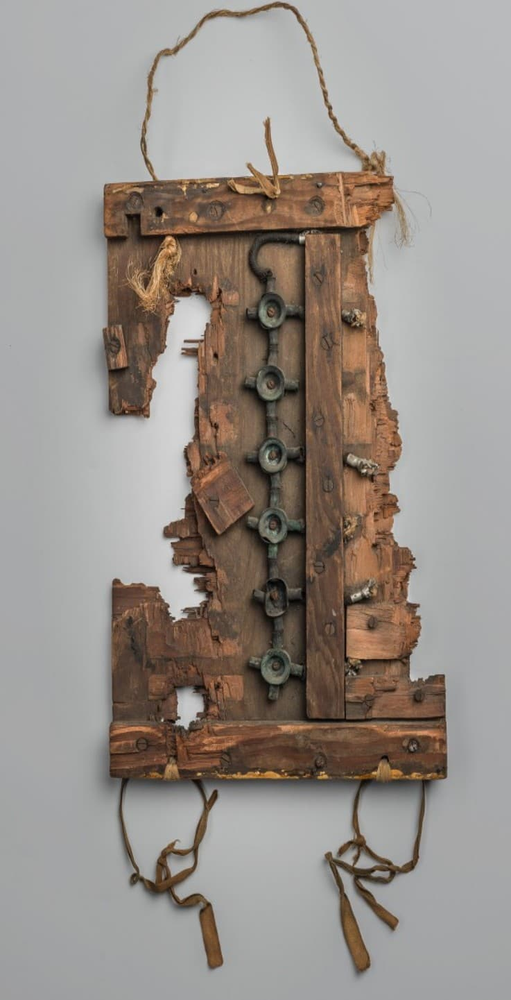

L’opération Titanic est l’une des opérations de diversion les plus ingénieuses du Débarquement. Dans la nuit du 5 au 6 juin 1944, alors que les véritables parachutistes américains et britanniques sont largués sur leurs zones d’objectifs, les Britanniques déclenchent une fausse invasion aéroportée destinée à semer la confusion dans les rangs allemands.
Pour cela, ils utilisent des mannequins parachutistes, surnommés « Rupert », capables d’imiter visuellement et auditivement un largage massif. Titanic fait partie du vaste plan de tromperie Bodyguard / Fortitude, conçu pour masquer les véritables intentions alliées et disperser les forces allemandes.
Dans la nuit précédant le Débarquement, les Alliés doivent protéger les zones de parachutage réelles (Sainte-Mère-Église, Ranville, etc.). Les Allemands surveillent attentivement le ciel et les radars. Titanic a pour mission de créer de fausses zones de parachutage afin de détourner l’attention et les renforts ennemis.
Cette diversion permet aux véritables unités aéroportées de progresser plus facilement vers leurs objectifs stratégiques : ponts, carrefours, batteries côtières.

Titanic est divisée en quatre secteurs, chacun conçu pour simuler une attaque aéroportée crédible :
Ces zones sont volontairement éloignées des véritables objectifs pour attirer les troupes allemandes ailleurs.

Les mannequins parachutistes Rupert sont au cœur de l’opération. Leur silhouette humaine, visible de loin, donne l’illusion d’un largage massif. Les Allemands, observant la scène de nuit, croient voir des centaines de parachutistes alliés.
Ces modèles permettent de créer une illusion crédible d’une attaque aéroportée de grande ampleur, renforcée par des enregistrements sonores diffusés au sol.

Titanic vise à :
L’opération est considérée comme une réussite totale dans la stratégie de tromperie alliée. Plusieurs unités allemandes sont détournées de Caen et de Carentan, facilitant les opérations Pegasus, Albany, Boston et les débarquements sur les plages.